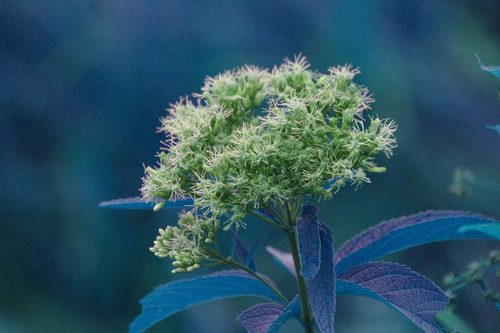
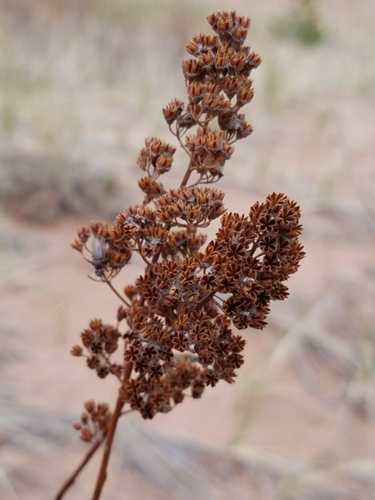
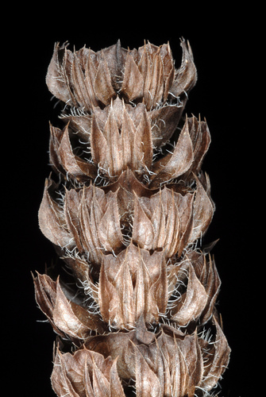
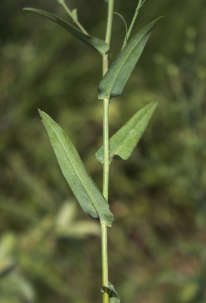
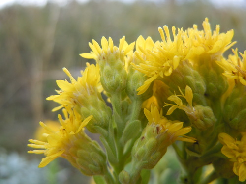

Physocephala tibialis
Physocephala tibialis insect
Thick-headed flies, native parasitoids of bees.
10 documented plant relationships.
sips nectar at
 Douglas Goldman, some rights reserved (CC BY-SA), uploaded by Douglas Goldman") Flat-topped GoldenrodEuthamia graminifolia
Flat-topped GoldenrodEuthamia graminifolia Alan Prather, some rights reserved (CC BY), uploaded by Alan Prather") Giant HyssopAgastache foeniculum
Giant HyssopAgastache foeniculum
Joe-Pye WeedEutrochium maculatum
MeadowsweetSpiraea alba
Self-healPrunella vulgaris
Smooth AsterSymphyotrichum laeve
Stiff GoldenrodSolidago rigida tzeducation, some rights reserved (CC BY), uploaded by tzeducation") Wild BergamotMonarda fistulosa
Wild BergamotMonarda fistulosa Jim Morefield, some rights reserved (CC BY), uploaded by Jim Morefield")
 gwt2102, some rights reserved (CC BY)")